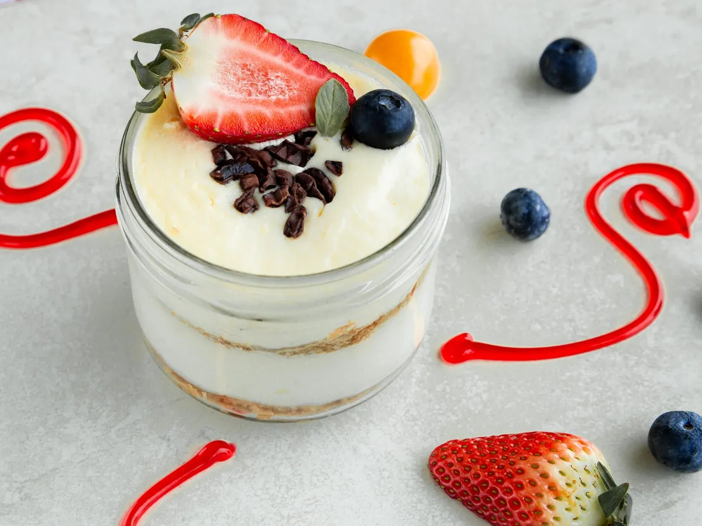
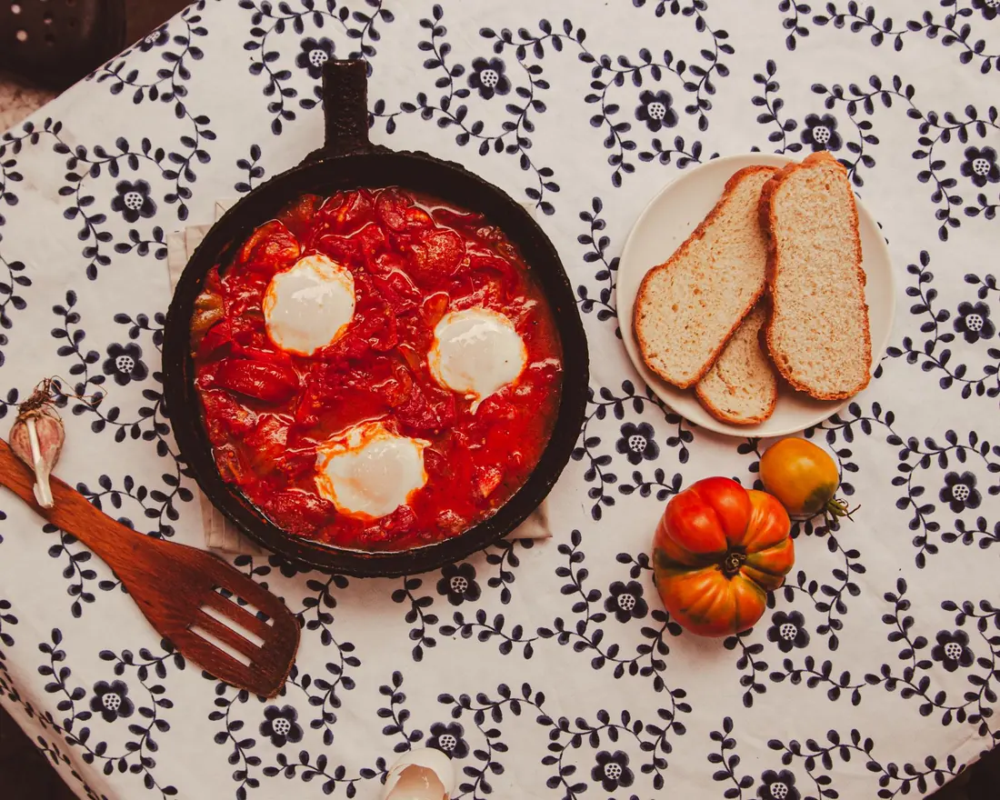
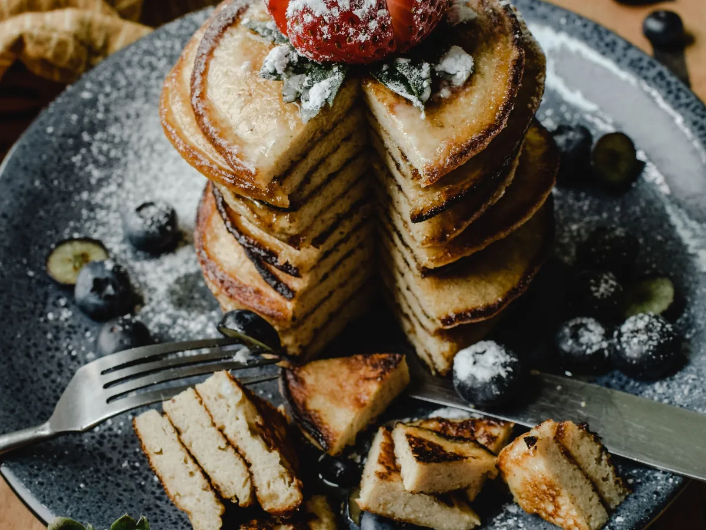
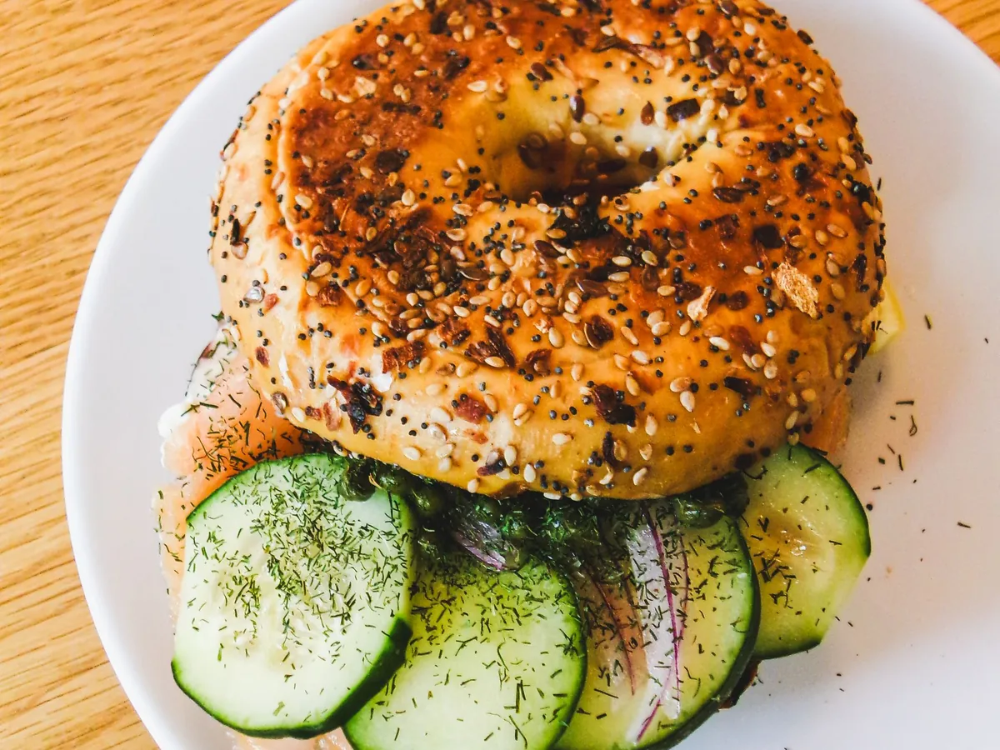
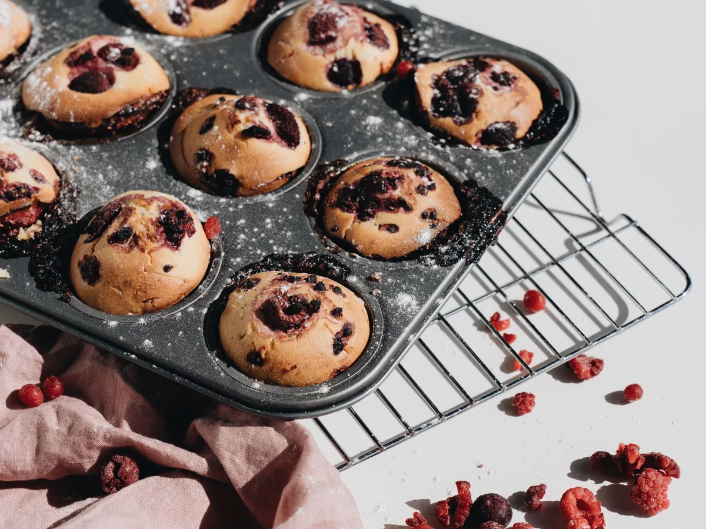

Collection · 13 recipes
Protein-first
breakfasts.
Breakfast is often the easiest place to fit protein in. These recipes keep portions small and put eggs, yogurt or cottage cheese first.
Several of these can be made ahead, so a small breakfast is ready even on slow mornings. Protein per serving is listed on every recipe as an estimate.
 Beyond ToastV
Beyond ToastVCottage Cheese Scrambled Eggs
The creamiest eggs, with extra protein.

Beyond ToastVGreek Yogurt Berry Parfait Jars
Cold, creamy and ready when you are.
 Beyond ToastVGF
Beyond ToastVGFStrawberry Cottage Cheese Bowl
Five minutes, 26 g of protein.

Beyond ToastVGFOne-Pan Shakshuka
Two eggs, smoky tomato sauce, a spoon of yogurt.
 Beyond ToastV
Beyond ToastVAvocado Cottage Cheese Toast with Jammy Eggs
One slice, a creamy protein spread, a jammy egg.
Spinach & Feta Mini Frittata
Six make-ahead wedges from one small pan.

Beyond ToastVCottage Cheese Pancakes
Blender pancakes with cottage cheese and oats.

Beyond ToastSmoked Salmon Bagel Halves
A deli breakfast in a smaller portion.
 Beyond ToastV
Beyond ToastVBlueberry Vanilla Overnight Oats
Three small jars, made the night before.
Freezer-Friendly Breakfast Burritos
Twelve smaller burritos, lean sausage, extra eggs.
 SnacksVGF
SnacksVGFSavory Herbed Cottage Cheese Bowl
Five minutes, no cooking, about 25 g protein.
 SnacksVGF
SnacksVGFBlueberry Greek Yogurt Chia Pudding
Make it tonight, eat it cold tomorrow.

Beyond ToastVBerry Greek Yogurt Muffins
A small, soft muffin with a little extra protein.
Protein values are estimates per serving. General cooking education, not medical or nutrition advice.

A free taste of Nourished
Start with three recipes.
Make the next step easier.
A free kit for adults using GLP-1 medication: three sample recipes, a shopping checklist and a three-day organizer.
9-page PDF in English. General cooking education.
More collections

Soft and Gentle Small Plates
Smooth soups, soft eggs and spoonable puddings for days when chewing and strong flavors feel like too much.
See the collection →
Freezer-Friendly Small Plates
Cook once on a good day, freeze in small portions, and reheat one when you need it.
See the collection →
Sips for Low-Appetite Days
Small smoothies, a warm latte and a light soup you can sip slowly when solid food is hard.
See the collection →